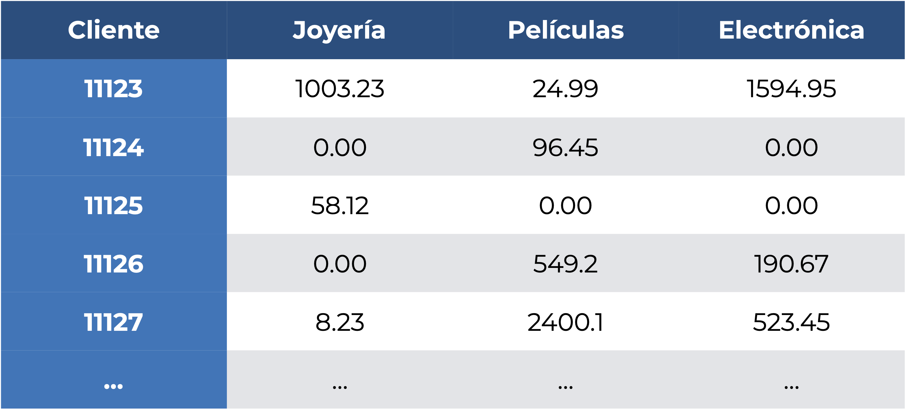
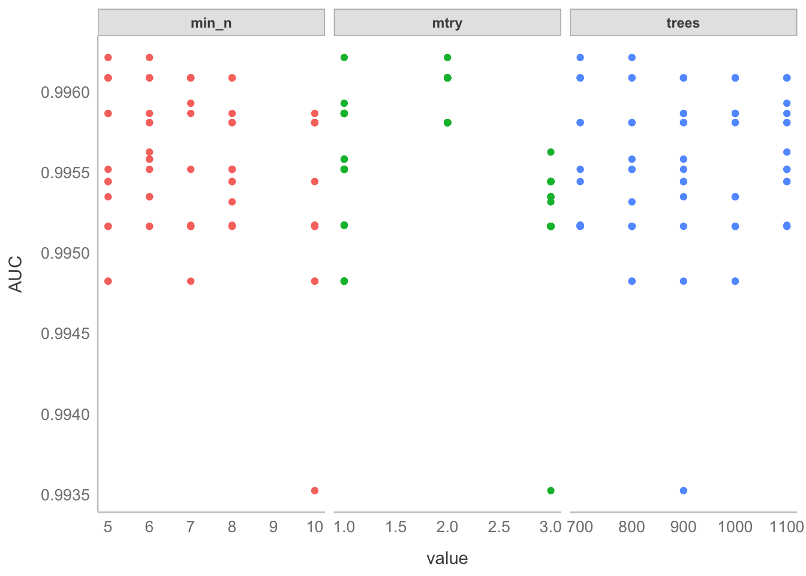

library(palmerpenguins)
library(tidyverse)
library(tidymodels)
library(vip)17 Aprendizaje supervisado: Clasificación
17.1 Librerías
17.2 Introducción
Hasta el momento hemos visto dos formas de involucrar respuestas categóricas: crearlas con alguna técnica de agrupamientos, o utilizarlas para hacer comparaciones con pruebas de significancia. En este capítulo vamos a hablar de (en mi opinión) una mejor alternativa (dependiendo de tu objetivo): la clasificación. La clasificación es una técnica de aprendizaje supervisado en la que el objetivo es predecir clases (etiquetas) a partir de los valores de los predictores. Al ser aprendizaje supervisado podemos evaluar su desempeño; es decir, qué tan bien estamos prediciendo nuestras etiquetas. Si tenemos un buen desempeño, podemos utilizar alguna medida de importancia de variables para explicar el modelo. Si no, toca volear mesas, jalarnos los cabellos, y regresar a pensar qué es lo que está fallando: ¿el modelo seleccionado no es el óptimo? ¿Debíamos de utilizar algún preprocesamiento? ¿el modelo no está optimizado adecuadamente? Al terminar este capítulo deberías de ser capaz de responder adecuadamente a todas estas preguntas. En la Figura 17.1 tienes una pequeña comparación entre los agrupamientos, la comparación y la clasificación.
17.3 Clasificación y clasificadores
Ya sabemos en qué consiste la clasificación, ahora veamos el fundamento detrás de todos los modelos de clasificación (clasificadores). Hoy en día uno de los temas que está muy de moda es la visión por computadora. Aunque se puede hacer un modelo no supervisado para la identificación de objetos, en muchos casos tenemos algo como lo siguiente: un conjunto de imágenes de un objeto (elefantes) y otro conjunto de imágenes de otro (jirafas). Le damos este par de etiquetas e imágenes a la computadora para entrenar un clasificador; es decir, para ajustar los parámetros del modelo. Posteriormente verificamos que el modelo funcione bien pasándole una imagen sin etiquetar y que sea el clasificador quien le asigne una etiqueta. Si el modelo aprendió lo que tenía que aprender debería de ser capaz de decirnos que una imagen de una jirafa es una jirafa, y no un elefante.
Importante
Este proceso de entrenamiento y prueba debemos de aplicarlo con todos los modelos de aprendizaje supervisado, independientemente de si son regresiones o clasificaciones.
Ya tenemos una idea del qué hace la clasificación, pero nos falta el cómo. Para regresión hemos hablado de distintos modelos (lineales, Capítulo 11 o no lineales, Capítulo 13), y en clasificación es lo mismo, tenemos una gran cantidad de métodos, cada uno con sus supuestos, fortalezas, y debilidades. En los renglones de la Figura 17.3 tenemos tres conjuntos de datos bivariados con dos clases (roja y azul) cada uno, y en las columnas los márgenes de decisión de los clasificadores; es decir, el límite entre ambas clases que aprendió cada clasificador. Esta es la gran diferencia entre los clasificadores: la complejidad de los límites que son capaces de aprender. En la tercera columna tenemos una máquina de soporte vectorial con un kernel lineal (linear SVM); es decir, que solamente puede aprender un límite lineal entre las clases. La consecuencia es que tiene un desempeño muy pobre en el segundo conjunto de datos, pero uno bastante aceptable el tercero. A su derecha tenemos también una máquina de soporte vectorial, solo que esta vez con un kernel RBF (RBF SVM) que puede aprender un límite más complejo. Como resultado el desempeño es mejor en todos los casos que en su contraparte lineal. Y así podríamos ir analizando caso por caso, viendo quién funciona mejor en qué tipo de casos, pero verás una tendencia clara: los clasificadores con límites de decisión más flexibles son los que tienen un mejor desempeño, independientemente del problema.

Advertencia
Eso son excelentes noticias, ¿no? Simplemente seleccionemos el algoritmo más flexible de todos y quitémonos de problemas. NO, para nada. Usualmente, conforme incrementa la flexibilidad del modelo, incrementa su complejidad.
17.4 Consideraciones al construir un modelo de aprendizaje automatizado
Esto último me lleva a hablar sobre con qué cosas debemos de tener cuidado al generar un modelo de aprendizaje automatizado, pues va mucho más allá de solo utilizar lm() y reportar un \(R^2\).
17.4.1 Ajuste (sub y sobre)
En los Capítulo 11 y Capítulo 13 vimos cómo entrenar y “evaluar” un modelo de regresión, pero no pusimos demasiada atención a la parte de la bondad de ajuste. ¿Por qué? Porque evaluar un modelo PREDICTIVO a partir de los datos que lo entrenaron es un SINSENTIDO. Es el equivalente a que yo te diga que al final del curso va a haber un examen, que te proporcione una guía de estudio, que tú como estudiante diligente la resuelvas y la estudies, y que el examen tenga exactamente las mismas preguntas. ¿Qué representaría tu calificación? ¿Lo que aprendiste sobre el curso o qué tan bien memorizaste la guía de estudio? Evidentemente lo segundo. En el caso de los modelos de aprendizaje supervisado pasa lo mismo: “aprenden” la información contenida en los datos, pero en el peor de los casos solo “memorizan” los datos que se les dieron (Figura 17.4).
¿Cómo contendemos con esto? Hacemos una división de nuestros datos: la mayor parte de los datos (usualmente alrededor del 75%) se utiliza para entrenamiento, mientras que los datos restantes se utilizan para probar el modelo final:
Esto lo que nos permite es evaluar objetivamente el desempeño de nuestro modelo, pues nunca ha visto los datos de prueba. Volviendo a la analogía del examen final y la guía de estudio, sería como si yo esta vez te diera un examen que abarque los mismos temas que en la guía, pero con problemas que te hagan pensar o abordarlos desde otra perspectiva para que realmente demuestres tu dominio sobre el temario, y no solo que resolviste la guía.
Esta “memorización” tiene un nombre: sobreajuste, que se define formalmente como una poca capacidad de generalización del modelo; es decir, que vamos a tener medidas de bondad de ajuste (o medidas de evaluación) mucho mejores en los datos de entrenamiento que en los datos de prueba. En todo escenario de aprendizaje supervisado buscamos un modelo que sea capaz de extraer la mayor cantidad de información posible de los datos, sin llegar a memorizar cada dato (sobreajuste), pero tampoco pasarnos de simples (subajuste; Figura 17.6)
Nota
¿A qué medidas de bondad de ajuste me refiero? A aquellas que tienen que ver con la capacidad predictiva del modelo. En regresiones serían medidas como el \(R^2\) o el \(MSE\). Más adelante explicaremos a detalle cómo evaluar el desempeño con un clasificador, pero es con una matriz de confusión, la curva de Características del Operador Receptor (ROC) y el área bajo esta (AUC-ROC).
Además de la parte práctica/filosófica tenemos otro problema que resolver: la compensación/balance de sesgo-varianza. El sesgo lo entendemos como la diferencia entre la predicción promedio de nuestro modelo y el valor real que queremos predecir (nuestro error), de manera que modelos con un alto sesgo no le prestan demasiada atención a los datos (error grande) y en consecuencia están sobre-simplificados. La varianza en este contexto la entendemos como la variabilidad del modelo de predicción para un punto dado, de modo que un modelo con una alta varianza le presta demasiada atención a los datos de entrenamiento y no generaliza bien a datos que nunca ha visto. ¿Por qué compensación? Porque, como ya había mencionado superficialmente antes, entre más complejo sea el modelo, mayor es la probabilidad del sobreajuste. ¿Qué tan severo puede ser? Tan severo como en la siguiente figura:
Advertencia
Cuando hablo de la complejidad del modelo no me refiero solo a seleccionar un modelo que sea más complejo que otro, sino también a la cantidad de variables. No porque podamos meter cientos o miles de variables a un modelo quiere decir que debemos hacerlo, hay que hacer una rigurosa selección de variables para reducir la diferencia entre los datos de entrenamiento y los de prueba.
17.4.1.1 Validación cruzada y optimización
Con esto llegamos a la validación cruzada y la optimización de hiper-parámetros. La validación cruzada consiste en partir los datos de entrenamiento en \(k\) conjuntos de entrenamiento/prueba, evaluar el desempeño para cada uno, y promediarlos (Figura 17.8)

Lo que conseguimos con esto es una evaluación más robusta del desempeño de nuestro modelo, pues ya estamos viendo qué pasa con distintas combinaciones de datos vistos/no vistos. Pudiera llegar a suceder que tenemos mucha suerte y que la partición original se preste para obtener buenas métricas, o tener muy mala suerte y que se preste para tener malas métricas. Y para acabar de “redondear” lo escépticos que somos con nuestro modelo, después de haber probado con distintos \(k\) sub-conjuntos (k-folds), lo volvemos a probar con los datos de prueba originales (hay quien los denomina en este contexto datos de validación).
Nota
Así como no muestreamos solo un individuo para hacer inferencias, tampoco consideramos una sola partición entrenamiento prueba. ¿Cuántas sub-divisiones debemos de hacer? Pueden ser tan pocas como 5, o tantas como n-1, pero un “estándar” (más bien una convención por comodidad) es que la validación cruzada sea de orden 10 (10 k-folds).
Importante
El tamaño de la partición entrenamiento-prueba original y el orden de la validación cruzada dependen del número de datos que tengas. Si tu conjunto de prueba queda con un tamaño muy reducido (pensemos menos de diez observaciones), mejor solo quédate con la validación cruzada en todos tus datos.
¿Y qué pinta la “optimización de hiperparámetros” aquí? Para empezar, ¿qué es la optimización de hiperparámetros? Pues bien, resulta que muchos modelos de aprendizaje supervisado tienen no solo los parámetros que queremos ajustar (por ejemplo las pendientes en la regresión lineal), sino que también tienen otros parámetros que controlan su complejidad. Esto puede ser el valor de \(\alpha\) o \(\lambda\) en una regresión regularizada como las que veremos en el Capítulo 18, o el número máximo de predictores que considera un árbol de decisión. Es importante optimizar esos hiperparámetros, para no terminar con un modelo innecesariamente complejo que no va a tener una buena capacidad predictiva, y la mejor manera de hacerlo es utilizando validación cruzada.
17.4.2 Fuga de información
Hay otra cosa con la que debemos de tener muchísimo cuidado al construir cualquier modelo de aprendizaje automatizado: la fuga de información. Volviendo a nuestra analogía del examen sería el equivalente a que alguien te soplara las respuestas del examen, o a que sacaras un acordeón. ¿Cómo pasa esto? No prestando atención a la información que le damos al modelo. El conjunto de prueba debe de aislarse completamente del de entrenamiento. ¿Necesitas pre-procesar los datos de una manera (escalarlos, por ejemplo)? Escala los datos de entrenamiento y utiliza esos parámetros para escalar los datos de prueba. Si vas a centrar y estandarizar, separa tus datos, calcula las medias y desviaciones de cada variable con los datos de entrenamiento y con esas medias y desviaciones centra y estandariza ambos conjuntos de datos; es decir, no escales la base completa, de lo contrario le estás dando al modelo información sobre datos que no debería de ver en ningún momento antes de la evaluación. Tampoco las escales por separado, pues eso te introducirá un sesgo aleatorio derivado de la división.
Otro caso de fuga de información, aún menos evidente que el anterior, es tener casos en los que tengamos algo tipo “la variable \(A\) lógicamente implica la respuesta \(Y\)”. ¿Cómo es esto? Imagina que una tienda departamental que vende únicamente joyas, películas y electrónica (raro, lo sé) nos contrata para saber cuánto va a gastar un cliente en joyería (el segmento con mayores utilidades) a partir de lo que gasta en las otras dos cosas, por lo que nos da los registros cliente a cliente en la siguiente tabla:

¿Qué cliente salta a la vista? Espero que me digas que el 11125, pues la única razón por la que el cliente está en el registro es porque compró algo de joyería. Nada más. Esto hace que nuestro modelo aprenda algo, pero ese algo es una peculiaridad y no algo relevante sobre lo modelado.
Nota
El tema de la fuga de información es sumamente extenso, pero una excelente lecura al respecto es Kaufman et al. (2012).
Ahora sí, hablemos de cómo evaluar un clasificador.
17.5 Evaluación de un clasificador
Hace un par de subtemas mencioné someramente las formas con las que evaluamos la calidad de las predicciones de un clasificador. Bien, ahora entremos a los detalles correspondientes.
17.5.1 Matriz de confusión
La matriz de confusión no es otra cosa mas que una tabla de contingencia que relaciona las clases observadas y las predichas por el clasificador. En un caso de clasificación binaria (dos clases objetivo) tendríamos una estructura como la siguiente:
| A | B | |
|---|---|---|
| \(\hat{A}\) | VP | FP |
| \(\hat{B}\) | FN | VN |
Si lo piensas con atención, esto es todo lo que necesitamos: en qué acertó y en qué se equivocó, aunque esto se vuelve muy impráctico cuando tenemos más de dos clases, y no nos permite evaluar rápidamente nuestro clasificador. Es aquí donde entran las medidas derivadas de esta matríz. Expliquémoslas todas con la siguiente matriz de confusión:
| A | B | |
|---|---|---|
| \(\hat{A}\) | 4 | 1 |
| \(\hat{B}\) | 2 | 5 |
- Exactitud (Accuracy): Representa el porcentaje de clasificaciones correctas, independientemente de si fueron verdaderos positivos o verdaderos negativos. Es decir, la suma de los elementos en la diagonal dividida entre el número total de observaciones. En nuestro ejemplo el clasificador tuvo una exactitud del 75%.
\[Exact = \frac{VP+VN}{N} = \frac{4+5}{12} = \frac{3}{4} =0.75\]
- Precisión (Precision): Representa el porcentaje de clasificaciones positivas correctas; es decir, de todas las clasificaciones que fueron positivas, qué proporción era en realidad positiva. Nuestro clasificador de ejemplo tuvo una precisión del 80%:
\[Prec = \frac{VP}{VP+FP} = \frac{4}{4+1} = \frac{4}{5} = 0.8 \]
- Tasa de verdaderos positivos (True Positive Rate, TPR). También conocida como sensibilidad. Esta indica qué porcentaje de los verdaderos positivos se clasificó correctamente; es decir, dividimos los verdaderos positivos entre la suma de estos y los falsos negativos, pues debieron de haber sido verdaderos positivos. Nuestro clasificador de ejemplo tuvo una sensibilidad del 66%
\[TPR = \frac{VP}{VP+FN} = \frac{4}{6} \approx 0.66\]
- Tasa de verdaderos negativos (True Negative Rate, TNR). También conocida como especificidad. Es la proporción de los verdaderos negativos que se clasificó correctamente, siguiendo la misma lógica de la TPR. Nuestro clasificador de ejemplo tuvo una especificidad del 80%.
\[TNR = \frac{VN}{VN+FP} = \frac{5}{6} \approx 0.8\]
- F1. Esta es una medida que relaciona la precisión y la tasa de verdaderos positivos para dar una medida de la robustez del modelo. En nuestro modelo de ejemplo fue del 77%:
\[F1 = \frac{2*Prec*TPR}{Prec + TPR} = 2*\frac{0.75*0.8}{0.75+0.8} \approx 0.77\]
- Tasa de No Información (No-Information Rate, NIR). Es el porcentaje que representa la clase mayoritaria del total, y representa la exactitud que tendría un modelo “bobo”; es decir, un modelo que predijera siempre esa clase mayoritaria. Nuestras clases están balanceadas, por lo que la NIR es del 50%:
\[NIR = max(n_i) = \frac{6}{12} = 0.5\]
Además de estas R nos da otras dos que también son útiles:
\(p(Exact > NIR)\): el resultado de una prueba binomial para ver si la exactitud del modelo es superior a la de un modelo bobo.
Kappa de Cohen: es un índice de la confiabilidad interna del clasificador. En pocas palabras, es el porcentaje de clasificaciones correctas que no son atribuíbles al azar. Como buen índice, está contenido en el intervalo \([-1,1]\), pero el valor máximo alcanzable en nuestro problema depende de qué tan balanceadas (o no) estén nuestras clases. Entre más balanceadas estén, más fácil será alcanzar valores altos, y viceversa.
Si bien todas estas medidas representan distintos aspectos de la clasificación, hay un par de formas de evaluación más que, para la mayor parte de los problemas, dan una mejor representación de la capacidad predictiva del modelo.
17.5.2 Curva de Características del Operador Receptor (ROC)
Si has escuchado algo sobre los modelos de distribución de especies (MAXENT o similares), seguramente también hayas escuchado sobre la curva ROC. Esto es porque esos modelos son, en realidad, clasificadores que predicen si una especie puede estar (positivo) o no (falso) en un lugar determinado, pero eso es salirnos del tema.
La curva ROC muestra la relación entre la TPR y la FPR (que es el complemento de la TPR: 1-TPR) a distintos niveles, lo cual da una evaluación más confiable de la capacidad predictiva del modelo (Meyer-Baese & Schmid, 2014) donde el mejor modelo llevará la “curva” hacia la esquina superior izquierda (una tasa de verdaderos positivos perfecta en todos los casos), y un modelo bobo estará cercano a una línea central de referencia con pendiente de 1, lo que representa una clasificación al azar:
17.5.3 Área bajo la curva ROC (ROC-AUC)
La curva ROC es sumamente útil para ver qué tan bueno o malo es el modelo, pero siempre es más fácil lidiar con un solo número. Es ahí donde entra el área bajo la curva (AUC-ROC). Esta área bajo la curva está en el intervalo [0,1], donde 1 es una clasificación perfecta, 0.5 una clasificación aleatoria (no hubo clasificación), y 0 es que el modelo reciprocó (invirtió) la clase a predecir.
El AUC tiene dos bondades:
- Es invariable con respecto a la escala; es decir, mide qué tan bien se clasifican las predicciones, más que dar sus valores absolutos.
- Es invariable con respecto al umbral de clasificación. Cuando entrenamos un modelo de clasificación podemos seleccionar un umbral para que el modelo diga que algo es la clase positiva. Entre más bajo sea este umbral, más positivos vamos a tener. El AUC mide la calidad de las predicciones del modelo, independientemente de qué umbral se haya seleccionado.
Estas dos bondades, sin embargo, tienen dos bemoles:
- La invarianza de escala puede ser inconveniente. A veces necesitamos resultados de probabilidad bien calibrados (¿qué probabilidad hay de que una observación sea clasificada como A y no como B?), y el AUC no es eso.
- La invarianza al umbral de clasificación puede ponernos el pie. En casos en los que tenemos grandes disparidades en el costo de falsos negativos con relación a falsos positivos es imperante minimizar uno de esos errores de clasificación, y el AUC no es la medida para eso.
No hay un criterio claro para decir “qué tanto es tantito” y definir si un modelo es “bueno” o “malo”, pero Hosmer, Lemeshow & Sturdivant (2013) dan los siguientes intervalos:
- 0.5: no hay clasificación
- (0.5, 0.7]: clasificación pobre
- (0.7, 0.8]: clasificación aceptable
- (0.8, 0.9]: excelente clasificación
- (0.9, 1]: clasificación excepcional
Ahora sí, después de toda esta teoría podemos aprender a implementar, evaluar e interpretar clasificadores.
17.6 Árboles de decisión y ensambles
En la primera versión del curso hablé sobre clasificadores “tradicionales” que se han empleado en el área de la biología (regresión logística y análisis de funciones discriminantes lineales), pero creo que vale la pena hablar de algunas alternativas con márgenes de decisión más flexibles y que son casi igual de interpretables.
Nota
La regresión logística la vamos a retomar en el Capítulo 19 porque es un modelo lineal con un error binomial.
¿Por qué “casi” igual de interpretables? Porque usualmente entre más flexible es un modelo, más complejo es su funcionamiento, menos simple es explicar cómo hace las predicciones y, por lo tanto, sacar conclusiones sobre cómo influyen las variables. Pero empecemos por lo sencillo.
17.6.1 Árboles de decisión
Los árboles de decisión son un modelo que “clasifica según el principio de partición recursiva, donde el espacio de atributos se parte recursivamente en regiones que contienen observaciones con valores de respuesta similares” (Strobl, Malley & Tutz, 2009). A veces me pregunto porque los matemáticos hacen definiciones tan agresivas, pero tiene mucho sentido. No explicaré qué es la recursividad porque sería desviarnos del tema, pero podemos simplificar la definición de un árbol de decisión como un modelo que clasifica a partir de decisiones binarias sobre nuestros datos, como si fuera un diagrama de flujo. Imagina que queremos decidir si vamos a surfear o no (asume que sabemos), entonces seguiríamos un diagrama de flujo como el siguiente:
Nota
Las partes del árbol de decisión son básicamente las mismas que las del dendrograma (Capítulo 15). La diferencia es que no tenemos una raíz, cada nodo (punto de decisión) involucra una sola variable, y al final no tenemos hojas, sino nodos terminales.
Aplicado a nuestros datos la lógica es la misma: encontrar límites en cada variable que permitan llevar la decisión hacia una clase u otra. El algoritmo (Breiman, 2001) tiene un objetivo: que después de cada decisión incremente la “pureza” de los nodos que le siguen; es decir, que con cada decisión se abarque la mayor cantidad de datos posible hasta lograr una clasificación perfecta. Esto se logra minimizando la impureza Gini. Este índice tiene bastante teoría detrás, pero podemos simplificarlo como la tasa de error que obtendríamos si retiramos una variable, de modo que un buen predictor minimizará ese error y dará como resultado nodos más puros [ShogaRangswamy_2018]. En pocas palabras: vamos a seleccionar la variable con la que nos equivoquemos menos al hacer las decisiones.
Como te habrás dado cuenta, es un algoritmo con una lógica que nos es fácil de entender, pues es muy similar a cómo tomamos decisiones (si A, entonces B) y, de hecho, esa es una de sus ventajas:
- Los árboles de decisión son fáciles de interpretar: su lógica binaria y la representación visual hace que interpretarlos sea sencillo. Además, la estructura jerárquica facilita saber qué atributos son los más importantes e incluye la interacción (por el momento entendámosla como la correlación) entre ellos.
- Requieren de poca o nula preparación de los datos: pueden lidiar con muchos tipos de variables, sean continuas o discretas, e incluso pueden lidiar con datos faltantes.
- Son flexibles: Aunque los estamos viendo en el tema de clasificación, podemos utilizarlos también para problemas de regresión. De hecho, si utilizas el algoritmo de Breiman (2001) que describimos antes, también se les conoce como Classification and Regression Trees (CART).
Como todo lo demás en esta vida, si hay ventajas también hay desventajas:
- Propensos al sobreajuste. ¿Recuerdas que buscamos perfeccionar la clasificación lo más posible? Si dejamos que el árbol crezca indefinidamente va a, literalmente, memorizar los datos que le dimos para entrenarlo.
- Son estimadores con alta varianza, de modo que pequeñas variaciones dentro de los datos pueden producir árboles muy diferentes.
- Alto costo computacional, derivado de la aproximación “codiciosa” (greedy) tomada durante su construcción (entiendelo como evaluar todo al mismo tiempo). Entre más datos y clases con límites complejos tengamos, más tiempo o poder computacional (o ambos) vamos a necesitar para entrenar el modelo.
La tercer desventaja la podemos “obviar”, pues para fines de investigación no vamos a necesitar entrenar y obtener el modelo prácticamente en tiempo real, pero las primeras dos sí que son importantes, y nos llevan a hablar de los ensambles de árboles, particularmente los bosques aleatorios.
17.6.2 Bosques aleatorios
Para empezar, ¿qué es un ensamble? Es juntar múltiples modelos de aprendizaje automatizado para obtener un modelo con una mejor capacidad predictiva. Si nuestro modelo base son árboles de decisión y juntamos varios, es natural llamar a su ensamble un “bosque”. O bueno, solo a uno de sus ensambles, porque en realidad hay más modelos (AdaBoost, XGBoost, bagged trees) que son ensambles de árboles. ¿Por qué seleccionar a los bosques aleatorios? Realmente por practicidad, pues tanto AdaBoost como XGBoost tendrían razones similares:
- Comparten las fortalezas de los árboles de decisión, con excepción de la interpretación (ya hablaremos de eso en el ejemplo).
- Nulifican la principal desventaja de los árboles de decisión: al ser varios árboles se minimiza la probabilidad de sobreajuste.
- Minimizan también la alta varianza o, mejor dicho, se apropian de ella. La naturaleza aleatoria de los bosques aleatorio hace que, aún con los mismos datos, podamos obtener bosques completamente diferentes. ¿Importa? Para nada, porque no vamos a explicar cada bosque de manera individual.
Ahora bien, ¿cómo funcionan los bosques aleatorios? No puedo construir diferentes árboles de decisión si tengo los mismos datos de entrenamiento, entonces hay que cambiar eso. La forma en que lo hacemos deriva de dos conceptos (Pal, 2017):
- Agregación Bootstrap (“Bagging”): Se genera un conjunto de entrenamiento diferente para cada árbol, utilizando muestreos con reemplazo del conjunto original de datos de entrenamiento
- Selección aleatoria de atributos: Puedes entenderla como una agregación Bootstrap para los predictores , en la que los atributos (variables) considerados en cada nodo son un subconjunto aleatorio de las variables originales.
Es decir, cada árbol en el bosque va a trabajar con su propio subconjunto de observaciones, y en cada partición va a poder seleccionar solo de un subconjunto aleatorio de variables. El resultado es un modelo de aprendizaje supervisado que se considera como uno de los más eficientes (Carvajal, Maucec & Cullick, 2018), pero básta de cháchara y pongámonos manos a la obra.
17.6.2.1 Entrenamiento
Utilicemos esta vez los datos palmerpenguins::penguins_raw, y aprovechemos también para introducir el uso de tidymodels. Nuestro proceso consiste de básicamente 11 pasos (+1):
- Guardemos los datos en un objeto, manteniendo solo las variables numéricas (sin el identificador). El resultado es un conjunto de datos con 7 variables:
- Longitud del culmen
- Profundidad del culmen
- Longitud de la aleta
- Masa corporal
- Delta 15 N (o/oo)
- Delta 13 C (o/oo)
- Species, que contiene las etiquetas que queremos predecir
peng_data <- penguins_raw |>
# Seleccionar solo las columnas numéricas y "Species"
select(where(is.numeric) |
contains("Species")) |>
# Extraer la primera palabra de la columna `Species`
mutate(Species = str_extract(Species,
pattern = "\\w*")) |>
# Descartar los datos faltantes
drop_na()
head(peng_data)Ahora optimicemos e interpretemos el modelo de bosques
- Dividir los datos en datos de entrenamiento y prueba. Para esto utilizaremos las funciones
rsample::initial_split()yrsample::training(). Además, remuestrearemos los datos de entrenamiento para realizar la validación cruzada y optimizar los hiper-parámetros del modelo con la funciónrsample::vfold_cv()
# Dividimos los datos
peng_split <- rsample::initial_split(peng_data)
# Extraemos los datos de entrenamiento
peng_train <- rsample::training(peng_split)
# Datos para validación cruzada
peng_cv <- vfold_cv(peng_train)- Preprocesar los datos. Para esto haremos lo que
tidymodelsdenomina como una receta. Recordarás que los árboles de decisión no requieren prácticamente ningún tipo de preprocesamiento, pero centremos las variables numéricas para ejemplificar.- Pasos:
- Le damos a la receta (
recipe()) la fórmula y los datos de entrenamiento. - Añadimos un paso adicional para centrar los datos numéricos.
- Le damos a la receta (
- El objeto
peng_prepsigue los pasos que definimos para el procesamiento de los datos (por eso receta) y obtiene los parámetros que se van a utilizar, mientras quepeng_juicedcontiene los datos ya procesados.
- Pasos:
Nota
Una lista completa de todos los pasos de pre-procesamiento la puedes encontrar en la documentación correspondiente de tidymodels.
# Formación de la receta
peng_rec <- recipe(Species~., data = peng_train) |>
update_role(contains("Sample"),
new_role = "id vars") |>
step_center(all_numeric())
# Obtener parámetros para preprocesar
peng_prep <- peng_rec |> prep()
# Preprocesar los datos
peng_juiced <- peng_prep |> juice()- Crear el modelo. Ahora podemos especificar el modelo de bosques aleatorios.
- Evidentemente debemos de controlar la complejidad del modelo, lo cual haremos ajustando sus hiperparámetros:
mtry(el número máximo de predictores por árbol)min_n(el número de observaciones necesarias para seguir dividiendo los datos)trees(el número de árboles en el ensemble).
- Después especificamos que es un bosque para clasificación, y por último le indicamos que utilice la librería
rangerpara construir el bosque:
- Evidentemente debemos de controlar la complejidad del modelo, lo cual haremos ajustando sus hiperparámetros:
# Especificar el modelo
# Los hiperparámetros van a ser ajustados
tune_spec <- rand_forest(mtry = tune(),
trees = tune(),
min_n = tune()) |>
# Es un problema de clasificación
set_mode("classification") |>
# Se va a resolver con la librería ranger
set_engine("ranger")
Nota
Una lista completa de modelos la puedes encontrar aquí
- Luego, y es aquí donde brilla
tidymodels, formar un flujo de trabajo (workflow()) que contenga ambos pasos: la receta de preprocesamiento y el modelo.
# Se inicia un flujo de trabajo
tune_wf <- workflow() |>
# Sigue la receta para pre-procesar datos
add_recipe(peng_rec) |>
# Entrena el modelo
add_model(tune_spec)
Nota
En este punto no hemos entrenado el modelo, solo le hemos dicho a tidymodels cómo queremos que se manejen nuestros datos y qué modelo queremos aplicar. ¿Por qué “brilla” entonces tidymodels? Porque separa los pasos de la declaración del modelo de la ejecución, por lo que puedes modificar la especificación del modelo o del preprocesamiento de los datos de manera independiente, y permite que re-entrenemos el modelo simplemente modificando los datos en el paso 1.
- Ajustar los hiper-parámetros
- Establecer el procesamiento en paralelo para que el modelo se entrene de manera más eficiente
- Entrenar el modelo, lo cual podemos hacer con fuerza bruta, proponiendo una malla gigantesca de posibles valores, o podemos hacerlo de manera más eficiente escogiendo 20 puntos aleatorios para guiar la búsqueda. Hagamos lo segundo:
# Asignar 8 núcleos para la computación en paralelo
# Revisa cuántos puedes disponer tú (más o menos)
doParallel::registerDoParallel(cores = 8)
# Buscar los mejores hiperparámetros de entre 20 valores
tune_res <- tune_grid(tune_wf,
resamples = peng_cv,
grid = 20)i Creating pre-processing data to finalize unknown parameter: mtry- Evaluar primer ajuste. En este punto solo propusimos 20 valores tentativos para los hiper-parámetros del bosque, con el objetivo de guiar la búsqueda y no abusar de la confianza de nuestras computadoras. Pues bien, ahora hay que ver alrededor de qué valores vamos a hacer la optimización. ¿Cómo? Graficando los valores de AUC que le corresponden a cada valor de cada hiperparámetro. En la figura de abajo pareciera que todo es un caos, pero en realidad podemos ver que el AUC está en sus puntos más altos con:
min_nentre 5 y 10mtrycon menos de 3treescon alrededor de 1000.
# Graficar los valores de AUC de validación cruzada
# Recuperar los valores
tune_res |> collect_metrics() |>
# Quedarnos solo con los AUC
filter(.metric == "roc_auc") |>
# Extraer las columnas con las medidas
select(mean, min_n, mtry, trees) |>
# Poner la malla en formato largo
pivot_longer(min_n:trees,
values_to = "value",
names_to = "parameter") |>
# Graficar con `ggplot`
ggplot(aes(value, mean, color = parameter)) +
geom_point(show.legend = F) +
facet_wrap(~parameter, scales = "free_x") +
labs(y = "AUC") +
theme_bw()
Nota
Nota que estamos encadenando el procesamiento de los resultados y su graficado. Eso no tiene nada de sorprendente, a final de cuentas ggplot recibe como primer argumento un data.frame, pero es importante que observes que el operador de encadenamiento pasa de |> a +.
- Ajustar el ajuste; es decir, ajustar mejor los hiperparámetros con valores alrededor de esos “óptimos” que encontramos arriba.
- Establecemos una malla de búsqueda más fina con la función
grid_regular. - Re-entrenamos el modelo, pero esta vez de manera más dirigida con
rf_grid. El resultdo es que ahora todos los AUCs resultantes están por encima de 0.995.
- Establecemos una malla de búsqueda más fina con la función
# Establecer una malla con los nuevos valores de referencia
rf_grid <- grid_regular(mtry(range = c(1, 3)),
min_n(range = c(5, 10)),
trees(range = c(700, 1100)),
levels = 5)
# Optimizar los hiperparámetros con esa malla
tune2_res <- tune_grid(tune_wf,
resamples = peng_cv,
grid = rf_grid)
# Obtener y graficar los resultados
tune2_res |> collect_metrics() |>
filter(.metric == "roc_auc") |>
select(mean, min_n, mtry, trees) |>
pivot_longer(min_n:trees,
values_to = "value",
names_to = "parameter") |>
ggplot(aes(value, mean, color = parameter)) +
geom_point(show.legend = F) +
facet_wrap(~parameter, scales = "free_x") +
labs(y = "AUC") +
theme_bw()
- Seleccionar el mejor modelo. Con el código anterior optimizamos lo más posible los hiper-parámetros, ahora toca seleccionar la mejor combinación de hiperparámetros.
- Identificar el modelo con la función
select_best() - Actualizar la especificación original (
tune_spec)
- Identificar el modelo con la función
# Seleccionar el modelo con los mejores hiperparámetros
# (a los que les corresponde el mayor AUC)
best_auc <- select_best(tune2_res, "roc_auc")
# Actualizar el modelo con los nuevos parámetros
final_rf <- finalize_model(x = tune_spec,
parameters = best_auc)
# Muestra los detalles del modelo
final_rfRandom Forest Model Specification (classification)
Main Arguments:
mtry = 2
trees = 700
min_n = 5
Computational engine: ranger - Revisar importancia de variables. ¿Qué podemos aprender de este modelo? Las variables más importante para la clasificación son la longitud del culmen, seguida de la longitud de la aleta. ¿Tienen sentido biológico estos resultados? Esa es una discusión para otro momento, pues solo tomamos estos datos para ejemplificar la implementación de los bosques aleatorios.
# Graficar la importancia de variables
# Pasa el modelo final
final_rf |>
# Fija que se va a extraer la importancia de variables
set_engine("ranger", importance = "permutation") |>
# Estimada desde los datos de entrenamiento (- el identificador)
fit(Species ~.,
data = juice(peng_prep) |> select(-contains("Sample"))) |>
# Calcula y grafica la importancia de variables
vip(geom = "point") +
geom_point(color = "deepskyblue3") +
see::theme_lucid() +
labs(title = "Importancia de variables",
y = element_blank())
- Muy importante, verificar que el modelo no esté sobreajustado. Para esto vamos a crear un último flujo de trabajo, y después ajustar una última vez. ¿Por qué? Porque nuestros modelos hasta ahora se entrenaron en 10 subconjuntos de nuestros datos de entrenamiento (validación cruzada). Para este último ajuste usaremos la función
last_fit(), la cual ajusta el modelo final en todos los datos de entrenamiento y evalúa en los datos de prueba. Los valores de ROC-AUC y de exactitud son muy buenos, pero además en línea con lo que esperábamos de la optimización (AUC > 0.995), lo cual quiere decir que el modelo no está sobre-ajustado, sino que es muy bueno.
# Flujo de trabajo final
final_wf <- workflow() |>
add_recipe(peng_rec) |>
add_model(final_rf)
# Último ajuste
final_res <- final_wf |>
last_fit(peng_split)
# Resultados de la evaluación en los datos de prueba
final_res |>
collect_metrics()# Creación de las curvas ROC
rf_auc <- final_res |>
collect_predictions() |>
roc_curve(Species, c(.pred_Adelie,
.pred_Chinstrap,
.pred_Gentoo)) |>
mutate(model = "Random Forest")
autoplot(rf_auc) +
labs(title = "Curvas ROC") +
theme_bw()
Importante
En la función roc_curve del objeto rf_auc estamos pasando un vector con tres objetos ocultos: .pred_Adelie, .pred_Chinstrap, .pred_Gentoo. Estos contienen la probabilidad de pertenencia de cada observación a cada especie, y es con los que se obtiene la curva ROC que le corresponde a cada especie, pues la curva es solo para clasificaciones binarias. ¿Cómo funciona en este caso? La clase positiva es la clase predicha en cada curva, y la negativa es lo demás, básicamente representando un clasificador clase + vs. resto.
- Elaborar el reporte ¿Cómo reportamos todo esto? Te recomiendo que le eches un ojo a Enríquez-García et al. (2022) para ver cómo describir el método, pero los resultados podemos resumirlos como:
El bosque aleatorio tuvo un excelente desempeño sin sobreajustar (AUC-ROC = 0.99 en los datos de entrenamiento). Las variables más importantes para la clasificación fueron la longitud del culmen (\(\approx 14\%\)), seguida de la longitud de la aleta (\(\approx 12.5\%\)). El bosque aleatorio optimizado estuvo compuesto por 700 árboles, cada uno formado con un predictor (
mtry), considerando al menos 5 observaciones para poder hacer una división (n_min).
Esto fue todo para este (espero) motivante capítulo, donde entramos de lleno al mundo del aprendizaje supervisado. Me hubiera gustado darte un poco menos de teoría, pero aplicar modelos de aprendizaje automatizado es algo que requiere que pongamos muchísima atención a qué es lo que hacemos en cada paso y por qué, pues es muy fácil que resbalemos y que terminemos presumiendo un modelo sobreajustado. Voy a confirmar tus sospechas: también hay que verificar que nuestras regresiones no estén sobreajustadas, pero eso lo dejamos para la siguiente sesión.
17.7 Ejercicio
Aplica un clasificador de bosques aleatorios a los datos Medidas.txt que utilizamos en el Capítulo 15. Compara la importancia de variables con las cargas factoriales del ACP y con las variables significativas para la ordenación del NMDS. ¿Hay diferencias?